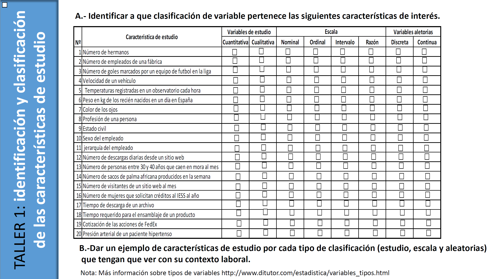

En esta viñeta se encontrará material extra referente al paquete qcr, cartas de control, FDA, entre otros.
- A continuación se muestra el material utilizado en la presentación
“Control Estadístico de la Calidad y Seis Sigma con R”




- A continuación se pueden observar las diapositivas utilizadas en el V Xornada de Usuarios de R en Galicia.
Nuevas Librerias para el Control Estadísitco de la Calidad (qcr) y Estudios Interlaboratorio (ILS) en la Industria:
- Se presenta el Proyecto presentado para el cumplimiento de los requisitos para culminar el Máster en Técnicas Estadísticas de la Universidad de La Coruña del Dr. Miguel Flores, titulado:
Desarrollo de una aplicación para gráficos de control de procesos industriales
Cite
Flores Sánchez, M. A. (2013). Desarrollo de una aplicación para gráficos de control de calidad de procesos industriales (Master’s thesis, ESPAÑA/Facultad de Matemáticas-Universidad de La Coruña/2013).
@mastersthesis{flores2013desarrollo,
title={Desarrollo de una aplicaci{\'o}n para gr{\'a}ficos de control de calidad de procesos industriales},
author={Flores S{\'a}nchez, Miguel Alfonso},
year={2013},
school={ESPA{\~N}A/Facultad de Matem{\'a}ticas-Universidad de La Coru{\~n}a/2013}
}- Se presenta la Tesis de Doctorado del Dr. Miguel Flores titulado:
Nuevas Aportaciones del Análisis de Datos Funcionales en el Control Estadístico de Procesos
Cite
Flores Sánchez, M. (2018). Nuevas aportaciones del análisis de datos funcionales en el control estadístico de procesos.
@article{flores2018nuevas,
title={Nuevas aportaciones del an{\'a}lisis de datos funcionales en el control estad{\'\i}stico de procesos},
author={Flores S{\'a}nchez, Miguel},
year={2018}
}